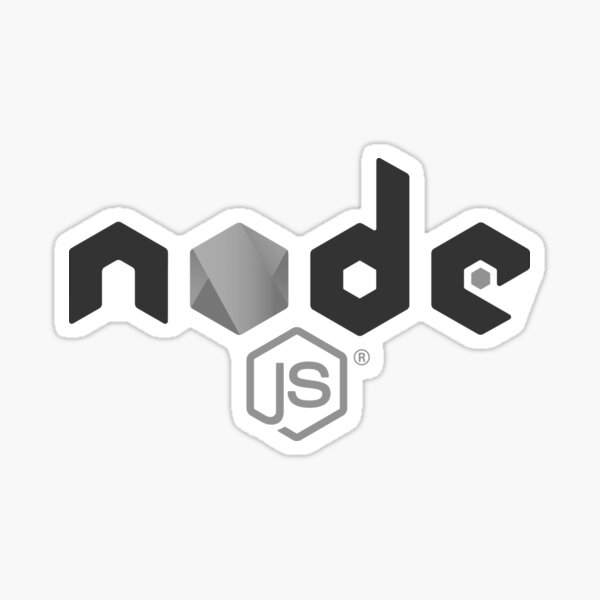
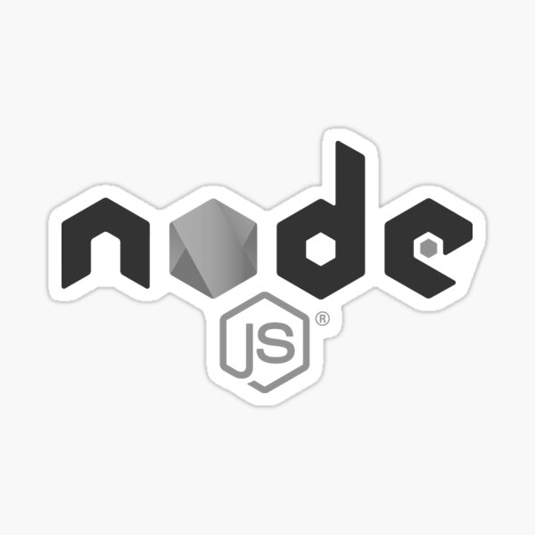
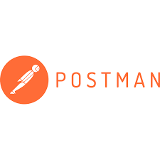
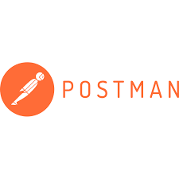

👋Hola! Soy fran. Desarrollador Fullstack especializado en JavaScript y React.js, con experiencia en la creación de aplicaciones web escalables. Comencé mi carrera en programación a principios de 2022 y complementé mi formación en Coderhouse, donde adquirí habilidades en desarrollo de APIs REST y soluciones frontend. Tengo conocimientos en testing, lo que me permite garantizar la calidad y fiabilidad del código, contribuyendo a la creación de aplicaciones robustas y eficientes.
Herramientas
Para Front-end:
JavaScript (ES6+) React.js - Creación de interfaces dinámicas, responsivas y modernas.
Next.js Features (Server-Side Rendering, Static Generation, Incremental Static Regeneration)
APIs REST: Implementación de interfaces entre Front-End y Back-End.
Versionado de Estilos (Styled-components / Emotion)
CSS: Tailwind, Bootstrap, Material UI
WebSockets: Comunicación en tiempo real.
Git y CI/CD Pipelines: Control de versiones y despliegues automáticos.
Para Back-end:
Node.js y Express.js: Desarrollo de aplicaciones y servicios backend.
MongoDB: Gestión de bases de datos NoSQL.
Firebase: Soluciones en tiempo real y autenticación.
Metodologías Ágiles (Scrum/Kanban): Trabajo en equipos ágiles.
C# .NET: Conocimientos básicos.
QA y Testing: Pruebas unitarias e integrales.
✔️Me adapto fácilmente a diferentes herramientas y circunstancias, y tengo habilidades para analizar e interpretar requerimientos, aplicando buenas prácticas de desarrollo.
Servicio Técnico Oficial Venta, repuestos e insumos para motoimplementos de bosque y jardín
Paso del Rey, Provincia de Buenos Aires
Octubre 2023 - Actualmente
Gestión y optimización de la presencia de productos en la plataforma.
Implementación de estrategias SEO y marketing digital para mejorar visibilidad.
Actualización de información de productos y supervisión de inventario para mantener stock.
Creación de sistemas para facilitar datos e información de la empresa.
Mantenimiento, actualización y desarrollo de la página web.
Comunicación activa con el cliente. (Telefónica y chats).
Club de tenis
Profesor Nacional de Tenis
Paso del Rey, Merlo, Marcos Paz. Provincia de Buenos Aires
Febrero 2018 - Actualmente
Enseñanza de los principios y las reglas del deporte.
Adaptación del entrenamiento según la edad, tanto para jugadores jóvenes como adultos.
Clases de tenis para grupos e individuales en todos los niveles.
Planificación de horarios para las distintas clases.
Preparación física para los alumnos que deseen mejorar su condición.
Educación
Frontend Developer (React JS) - Coderhouse
Buenos Aires, Argentina
Junio 2022 - 2024
Durante mi tiempo en Coderhouse, adquirí experiencia. Desarrollé interfaces con React JS y Next.js, y creé plataformas de E-commerce e integraciones de APIs usando Node.js, Express y MongoDB. También trabajé con Firebase y Firestore, y tengo experiencia con herramientas QA. Actualmente, estoy ampliando mis habilidades en Back-End y SQL.
Tecnicatura en Programación UNO (Universidad Nacional Del Oeste)
Buenos Aires, Argentina
2024
Después de haber culminado cursos y experiencias anteriores, estoy comenzando una Tecnicatura en Programación. (Tecnicatura universitaria en tecnologías web.)
Desarrollé un software para gestionar y administrar los horarios y días de las canchas de tenis. Además incluye un sección para crear torneo, crear jugadores en un ranking y que persistan guardados. Todo esto para que puedan usarlo los dias que quieran. (React JS) Visitá!
Esta aplicación web ha sido desarrollada utilizando React, TypeScript y Material UI, con el objetivo de facilitar la creación y exportación de currículums de manera rápida y sencilla. Permite a los usuarios registrarse, iniciar sesión y crear un perfil personal donde pueden agregar información relevante, como su experiencia, educación, habilidades y una foto de perfil.
Visitá!
Este proyecto es una página de comercio electrónico conectada con Mercado Libre, diseñada para la venta de repuestos de jardinería. Utilicé Next.js para la estructura y Tailwind CSS para el diseño. La integración con Mercado Libre facilita la gestión y actualización de productos. Visitá!
Este proyecto es una tienda en línea especializada en la venta de tenis. Utiliza Tailwind CSS para el diseño visual, Next.js para la estructura de la aplicación, Firebase para la autenticación de usuarios y la gestión de datos. Además, cuenta con una sección de administración para gestionar productos, con alertas para notificaciones en tiempo real. Visitá!
Desarrollé una aplicación web que permite a los usuarios buscar películas por nombre y visualizar detalles utilizando la API Cinema. La interfaz incluye un formulario de contacto y una sección de ayuda interactiva para asistir a los usuarios. Además, se implementa una solicitud de feedback después de un minuto de inactividad, todo esto con JavaScript, CSS y alertas personalizadas con SweetAlert. Visitá!
Desarrollé un sistema en JavaScript para calcular automáticamente los precios de productos al convertir dólares a pesos y porcentaje según el producto. Esta herramienta facilita la actualización de precios en tiempo real, optimizando la gestión de inventario y mejorando la precisión en la cotización de productos para la empresa.Visitá!
Creé una plataforma de gestión de proyectos donde los usuarios pueden crear, editar y eliminar proyectos. Utilicé Next.js para la construcción, SweetAlert para alertas, y un CRUD completo para manejar los datos, que se guardan en el almacenamiento local del navegador. Visitá!
Web interactiva para una tienda de hamburguesas que incluye un carrito de compras. Utilicé JavaScript para la funcionalidad, SweetAlert para alertas personalizadas, y CSS para el diseño. El sistema permite a los usuarios seleccionar sus productos y realizar pedidos de manera sencilla. Visitá!

 



 



{kind=link}
{kind=link}
{kind=link}
{kind=link}
{kind=link}
{kind=link}
{kind=link}
{kind=link}
{kind=link}
{kind=link}
{kind=link}
{kind=link}
{kind=link}
{kind=link}